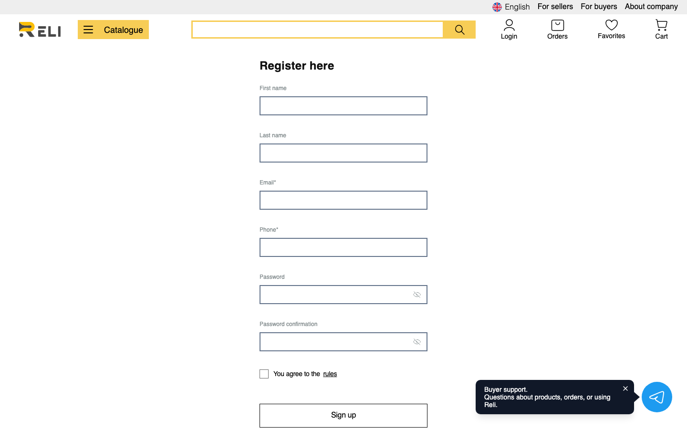
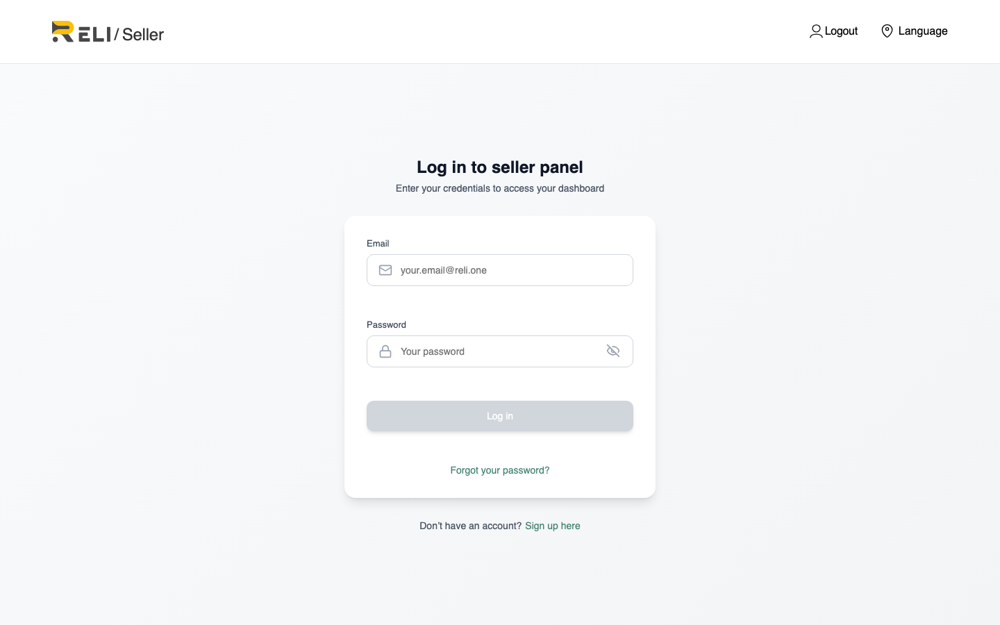

Что делать, если вы создали аккаунт покупателя, а теперь хотите продавать на Reli.one.
Версия: июнь 2026
1. В чём проблема
В системе Reli.one аккаунты покупателя и продавца — это разные типы учётных записей
с разными правами. При регистрации покупателя создаётся пользователь с ролью Customer;
для продажи нужна роль Seller и прохождение онбординга (верификации).
Важно: один и тот же email нельзя использовать повторно.
Если вы уже зарегистрировались как покупатель, форма
https://reli.one/seller/create-account
вернёт ошибку «user with this email already exists».
Рис. 1 — На этапе регистрации нужно выбрать «Стать продавцом», а не покупателя

Рис. 2 — Стандартная регистрация покупателя на сайте
2. Что происходит при попытке войти как продавец
Вход в кабинет продавца выполняется по адресу
https://reli.one/seller/login.
Пароль от покупательского аккаунта может подойти для авторизации, но доступ к онбордингу
и функциям продавца не откроется, пока у учётной записи нет роли Seller.

Рис. 3 — Страница входа в кабинет продавца
3. Варианты решения
Вариант A — Обратиться в поддержку (рекомендуется)
Напишите на office@reli.one с темой письма
«Перевод аккаунта в продавца» и укажите email, с которым вы зарегистрированы как покупатель.
Шаблон письма:
Здравствуйте!
Я зарегистрировался(ась) на Reli.one как покупатель, но хочу продавать товары на платформе.
Email аккаунта: ваш@email.com
Прошу помочь с переводом аккаунта в продавца или подсказать дальнейшие шаги.
С уважением,
Имя Фамилия
Команда поддержки вручную назначит роль продавца и создаст профиль Seller.
После этого вы сможете войти на https://reli.one/seller/login и пройти онбординг с тем же email.
Вариант B — Зарегистрировать продавца на другой email
Создайте новый аккаунт продавца с другим адресом электронной почты:
Пройдите онбординг по инструкции «Новая регистрация продавца».
Покупательский аккаунт на старом email сохранится — вы сможете по-прежнему делать заказы с него.
Продажа будет вестись с нового аккаунта продавца.
Вариант C — Удалить покупательский аккаунт и зарегистрироваться заново
Внимание: при удалении аккаунта вы потеряете историю заказов, избранное и другие данные,
привязанные к покупательскому профилю. Используйте этот вариант только если у вас нет активных заказов
и вы уверены в решении.
Удалите аккаунт в настройках профиля (Delete account) или обратитесь в поддержку;